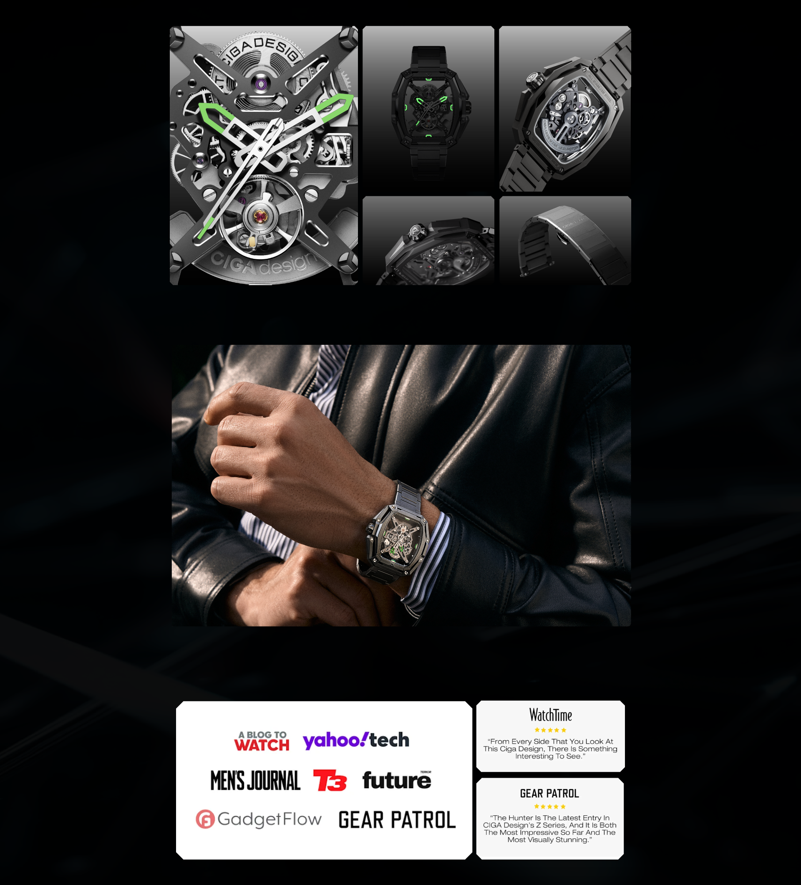

Estrutura totalmente transparente, caixa octogonal tonneau de três camadas e calibre CD-07 in-house. O Hunter foi desenvolvido para expor a mecânica como protagonista, com presença forte e acabamento contemporâneo.
Automático in-house · 28.800 vph · 24 joias
O Hunter leva a linguagem skeleton a um extremo mais arquitetônico, com construção em três camadas e leitura mecânica aberta dos dois lados.

A proposta oficial do Hunter parte de um princípio simples: deixar o movimento visível de maneira integral. A caixa octogonal tonneau em três camadas amplia a incidência de luz e aumenta em até 200% a transparência percebida em relação a uma arquitetura skeleton convencional.
O resultado é um relógio que parece mais técnico e mais leve ao mesmo tempo. Em vez de esconder a mecânica atrás do design, o Hunter usa a própria estrutura como vitrine para pontes, rodas e profundidade.
O aço inoxidável 316L com tratamento DLC, os parafusos aparentes e o bracelete em aço reforçam a sensação de peça industrial refinada, com identidade muito própria dentro da linha da CIGA design.

No centro do Hunter está o calibre automático CD-07, desenvolvido pela CIGA design para esta arquitetura aberta. No site internacional, ele aparece associado a 24 joias, frequência de 28.800 semi-oscilações por hora e aproximadamente 40 horas de reserva de marcha.
A marca também destaca um processo de montagem manual de cerca de 90 dias, o que combina com a proposta do relógio: não é uma peça de mostrador fechado, e sim uma construção tridimensional em que cada componente precisa conversar visualmente com a caixa.
Frente e verso em safira mantêm o calibre sempre visível, enquanto a proporção de 43 × 48 mm e 12,1 mm de espessura preserva presença sem transformar o relógio em uma peça excessivamente espessa.
Movimento automático com 24 joias, 28.800 vph e arquitetura pensada para operar em uma caixa completamente transparente.
Safira sintética na frente e no caseback, proteção máxima e acesso visual ao movimento automático de ambos os lados.
Reserva de marcha em torno de 40 horas, adequada para o uso diário e para quem alterna entre peças na coleção.
A construção em três níveis é parte central do visual do Hunter e ajuda a ampliar a leitura do movimento a partir de múltiplos ângulos.
Cada especificação do Hunter foi pensada para sustentar o desempenho e a robustez de um relógio feito para durar.

| Tamanho da Caixa | 43mm × 48mm |
| Espessura da Caixa | 12,1mm |
| Material da Caixa | Aço inoxidável 316L |
| Tipo de Movimento | Automático in-house, calibre CD-07 |
| Frequência | 28,800 vph |
| Reserva de Marcha | Aproximadamente 40 horas |
| Joias | 24 joias |
| Mostrador | Estrutura skeleton totalmente transparente |
| Vidro | Safira sintética (frente e caseback) |
| Resistência à Água | 3 ATM (30 metros) |
| Largura da Pulseira | 22mm |
| Material da Pulseira | Bracelete em aço inoxidável |
| Sistema de Pulseira | Quick-release (troca sem ferramentas) |
| Acabamento | Aço 316L com tratamento DLC |
O diferencial real do Hunter não está em inflar argumentos, e sim na combinação entre um calibre próprio, alta transparência estrutural e construção manual prolongada. É esse conjunto que faz a peça se destacar no catálogo internacional da marca.
Informações essenciais para que sua apresentação do Hunter seja precisa, autêntica e de alto impacto narrativo.
Como embaixador do Hunter, foque no que a própria CIGA destaca: transparência integral, caixa octogonal em três camadas, montagem manual e calibre CD-07. O apelo da peça é técnico e visual ao mesmo tempo.
Cada ângulo narrativo abaixo foi construído para maximizar o impacto do seu conteúdo sobre o Hunter.
| # | Direcionamento | Foco Narrativo | Base do Script (Exemplo) |
|---|---|---|---|
| 01 | Calibre In-House | CD-07 como diferencial técnico absoluto. | "Esse relógio tem algo que a maioria das marcas não consegue oferecer: um calibre desenvolvido internamente. O CD-07 é propriedade intelectual da CIGA design, não é um motor comprado em catálogo." |
| 02 | Presença no Pulso | O formato 43×48mm como declaração de estilo. | "Tem relógio que você nota no pulso de alguém antes mesmo de ver o rosto da pessoa. O Hunter é assim. 43×48mm de intenção pura." |
| 03 | 40 Horas de Reserva | Benefício real para colecionadores. | "Se você alterna entre relógios, 40 horas de reserva ajudam o Hunter a seguir pronto de um dia para o outro sem depender de bateria." |
| 04 | O Caseback como Espetáculo | O CD-07 visível pelo fundo em safira. | "Vire o pulso. O fundo em safira revela o calibre CD-07 funcionando. É como ter um janela para a engenharia, um segundo mostrador que a maioria das pessoas nunca vai ver." |
| 05 | Para o Colecionador | Hunter como peça técnica em uma coleção. | "Para quem coleciona relógios com critério, o Hunter entrega uma combinação rara de calibre próprio, caixa totalmente transparente e presença forte no pulso." |
| 06 | 3 ATM no Uso Diário | Robustez para o uso diário real. | "O Hunter foi pensado para rotina e uso urbano, com resistência à água compatível com o dia a dia, sem vender uma proposta de relógio esportivo." |
| 07 | Super-LumiNova® | Legibilidade em qualquer condição. | "No escuro total, o Hunter não desaparece. O Super-LumiNova® nos ponteiros e índices mantém a presença do relógio em qualquer condição de luz." |
| 08 | Quick-Release | Versatilidade sem comprometer a construção. | "A pulseira troca sem ferramenta. Couro para o trabalho, aço para o evento. O Hunter se adapta sem perder nada da sua identidade." |
| 09 | Montagem de 90 Dias | Tempo de construção como prova de complexidade. | "A CIGA associa o Hunter a um processo de montagem manual de cerca de 90 dias. Esse dado ajuda a explicar a sensação de peça mais elaborada." |
| 10 | Presente Masculino | O Hunter como presente de alto impacto. | "Quer dar um presente que ele nunca vai esquecer? O Hunter chega em embalagem formato livro, com calibre in-house e uma história técnica que qualquer homem vai querer contar." |
Imagens oficiais do Hunter disponíveis para uso em seu conteúdo.


Duas versões: Black para leitura mais técnica e dominante, Silver para uma presença clássica.
Compre direto no site oficial da CIGA design Brasil. Garantia, parcelamento e envio para todo o país pela JG Importadora.
Descontos cumulativos: 5% no Pix e mais 5% se for a sua primeira compra.
Comprar no Site Oficial usecigadesign.com.br